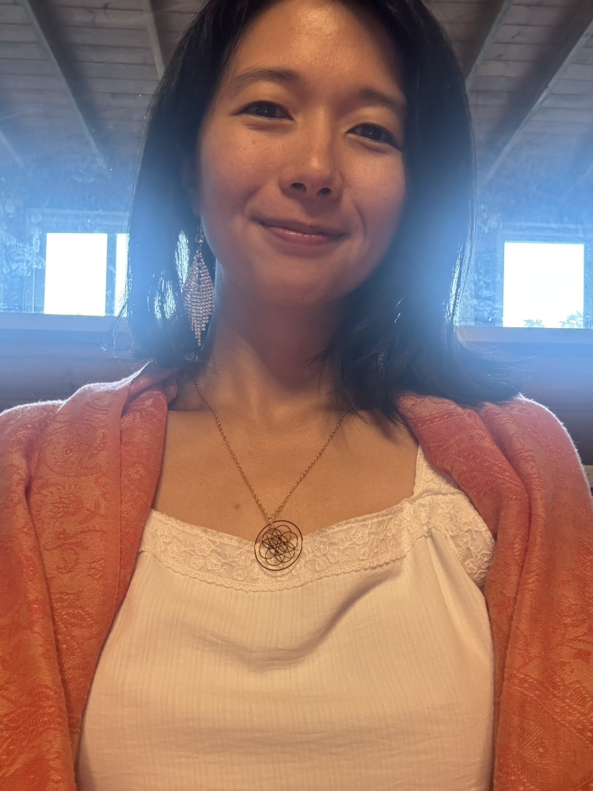
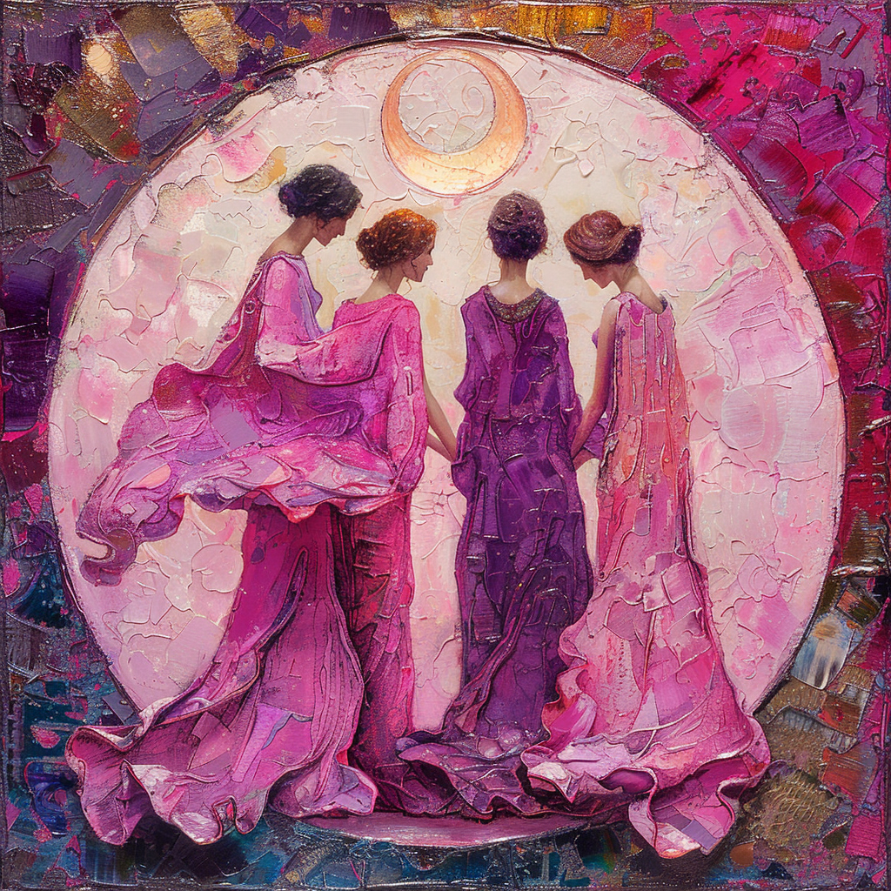

Womb-Moon 神聖脈輪女人圈 · 線上 ＋ 實體
妳沒有不夠好，也沒有走得太慢——妳只是，正被溫柔地喚回自己。這是一場八週、從身體出發的內在旅程，我們透過七個脈輪的能量地圖，一步步回到內在，傾聽、覺察、整合那些身體一直為妳記得的事。

你的照片妳的引導師
🌕 認證 Womb-Moon 神聖女人圈引導師・線上 ＋ 實體 了解 Womb-Moon 引導師聯盟 →我是 Milliya（欣妙）。出生在奧修（Osho）靜心門徒的家庭，從小跟著爸媽玩靜心、四處旅行——太陽、光亮與喜悅，至今仍是我最喜歡的人類品質。
走過生產、育兒與人生的挫折之後，我透過 EmbodyBirth 與 Zoya 老師的 Womb-Moon 煉金術，更深地認識了陰影、陰性能量與女性週期，並完成了 Womb-Moon 神聖女人圈引導師的認證，能帶領線上與實體的女人圈。
兩次溫柔生產的經驗讓我體會到：當一個女人被信任、被支持，生命會自然展開。我深深相信——每個靈魂都獨一無二，且擁有它原生的智慧。
—— Milliya・欣妙
什麼是 Womb-Moon
Womb
創造的源頭，直覺與神性本質的容器。它記得妳所有的情緒與經歷，也是妳通往更大智慧的橋。
Moon
內在的敏感、情緒的本質、週期的流動。跟著月亮的節奏，妳會重新信任自己的陰晴圓缺。
Alchemy
把生命的挑戰與陰影，慢慢轉化成內在的力量。不是切掉黑暗，而是讓光與暗，都能被擁抱。
為什麼從身體與脈輪開始
很多時候，我們以為自己卡住的是情緒、關係或人生選擇，但其實，身體早就知道。脈輪（Chakra）是源自古印度瑜伽的能量中心——沿著脊椎分佈的七個能量匯流點，承載著我們的安全感、情緒、力量、愛與信任。那些沒被說出口的感受，會留在身體裡，變成緊繃、疲憊、麻木。
這個女人圈，不是要快速打開或清理能量，而是在安全、被守住的關係裡，讓身體有時間慢慢放鬆、慢慢信任。當妳開始聽見身體的訊號，會發現——有些問題其實不需要被解決，它們只是需要被看見。 Milliya・身心靈整合視角
八週脈輪旅程
我真的，感覺自己是安全的嗎？
回到「活著本身」，聽見身體對於安全、金錢與健康的恐懼。
我允許自己去感受嗎？
讓被凍結的感受重新流動，找回對情緒、快樂與創造的允許。
我有站在自己這一邊嗎？
把力量帶回身體，不是去對抗，而是清楚地站在自己裡面。
我敢在愛裡，不那麼完美嗎？
讓心柔軟，不是為了犧牲，而是讓愛有呼吸的空間。
我有說出真正的自己嗎？
讓聲音回到身體，不為了說服誰，只為忠於自己。
我相信自己的感覺嗎？
安靜下來，讓直覺成為妳內在的導航。
如果不用自己一個人撐著，會怎樣？
把重量交還給更大的生命，在連結中找到信任與歸屬。
我，正在成為誰？
把八週的身體記憶與洞見，編織成屬於妳自己的生命樂譜。
一場女人圈的流程
每一次相聚，都是一個被溫柔守住的容器。

兩種參與方式
Online
連續八週、每週一次、每次約 2 小時，以 Zoom 進行，全程開啟鏡頭、彼此在場。專屬 Line 私密群組，圈外也持續陪伴。適合在家、在遠方、時間需要彈性的妳。
In Person
同樣的八週脈輪旅程，在同一個空間裡共振。身體舞動、儀式與圍圈，臨場的溫度更飽滿，名額更精緻。梯次時間與地點另行公告，可先填表登記意願。
適合妳嗎
在這個圈裡，我們不給建議、不做批判，只是「在場」，為彼此守住這份神聖。不需要任何身心靈基礎，只需要一份願意回到自己的心。
五個神聖約定
妳的分享只屬於這個圈，不傳述、不評論。
誠實面對自己與彼此，不假裝、不討好。
對自己的感受負責，被觸動時選擇連結而非退縮。
不批評、不比較、不給建議；妳的光不會遮住我的光。
即使有恐懼或疲憊，此刻的妳，就已經足夠。
常見的心裡話
可以。這不是一堂需要先修的知識課，而是回到身體的體驗。我們的節奏是慢的、被守住的，妳只要帶著願意感受的心來就好，沒有對錯，也不需要表現。
會很有力量。許多姊妹反而因為在自己熟悉、安全的家裡，更容易放鬆、更願意敞開。我們透過 Zoom 圍圈、開啟鏡頭、彼此在場，連結是真實的。如果妳偏好臨場的溫度，也有實體梯次可以選。
為了守住整個圈的連結與信任，線上聚會我們會邀請妳開啟鏡頭。分享則永遠是邀請、不是強迫——妳可以選擇只是在場、靜靜聆聽。光是願意出現，就已經是一份禮物。
安全永遠是第一位，妳隨時可以暫停、可以只是呼吸。這個圈是靈性與能量的支持空間，不是心理治療；若妳正經歷較深的創傷或困擾，我會鼓勵妳同時尋求專業的心理協助，我們一起陪妳，但不取代它。
沒有。我們用的是身體、呼吸、月亮與脈輪的語言，不屬於任何特定宗教，也尊重每一位姊妹各自的背景與信仰。
一個安靜、不被打擾的空間，加上穩定的網路就好。其餘的，我們會一起在圈裡慢慢展開。
開課與報名
每梯八週、名額精緻，是為了讓我們能好好接住每一位姊妹。下一梯的開課時間與形式（線上／實體），會在我的 Instagram 與 LINE 公告。
如果妳被這個圈吸引，歡迎先私訊我、和我說說妳此刻的狀態——新梯開放報名時，我會優先通知妳。
回到妳自己
不確定這個圈適不適合此刻的妳？沒關係，先聊聊妳的狀態，我會誠實地告訴妳，這是不是妳此刻需要的陪伴。
預約一次對話